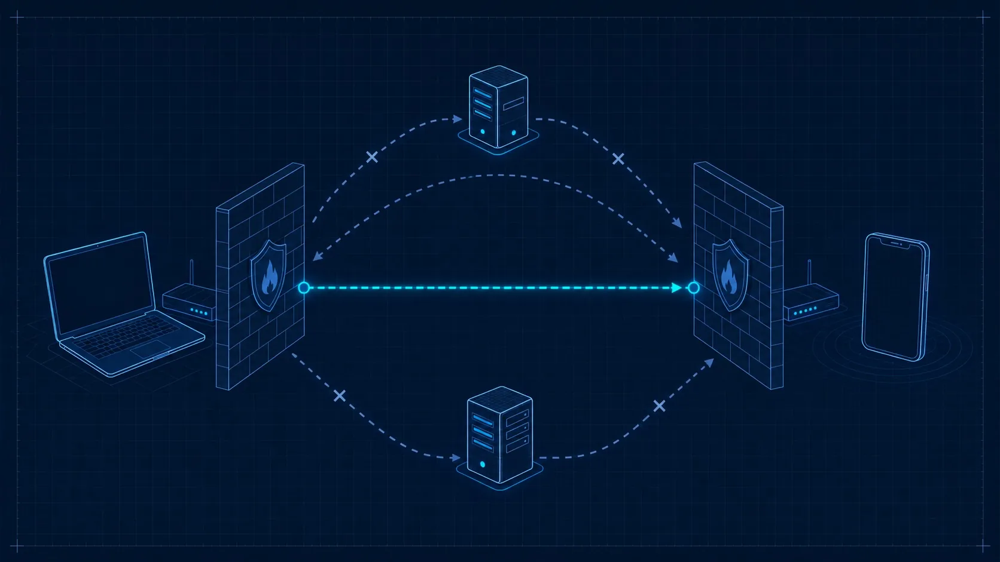

ICE, STUN & TURN
Two browsers want to talk. They know what to say (codecs, encryption keys, media lines—all wrapped up in SDP). But they still need to solve the hardest problem on the internet: finding a network path that actually works. Most devices sit behind NAT gateways that hide their real addresses. Firewalls block unsolicited inbound traffic. Corporate proxies rewrite packets. ICE is the framework that cuts through all of this, methodically testing every possible route until it finds one that delivers packets in both directions.
Think of ICE as a postal service that does not trust any single address. When you want to send a letter to someone, you write down every address you can think of—your home, your office, a P.O. box at the post office, a friend who will forward mail for you. The other person does the same. Then you try sending a test letter to every combination of your addresses and theirs. The first pair that gets a reply in both directions becomes the permanent mailing route. STUN is the service that tells you your P.O. box number. TURN is the friend who agrees to forward everything when no direct route works. ICE is the process of trying every combination until one succeeds.
The NAT Problem, Revisited
Chapter 02 introduced NAT as a necessary evil: it lets hundreds of devices share a single public IP address, but it makes peer-to-peer connections painful. A device behind NAT knows only its private address (something like 192.168.1.42). If it sends that address to a remote peer, the remote peer has no way to route packets to it—private addresses are not reachable from the public internet.
The situation gets worse with symmetric NAT, where the router assigns a different public port for every distinct destination. Even if you discover your public-facing address by talking to one server, that address may not work when a different host tries to reach you through it. This is why WebRTC cannot simply ask “what is my IP?” and call it a day. It needs a systematic process for discovering, testing, and selecting network paths. That process is ICE.
ICE: Interactive Connectivity Establishment
ICE (defined in RFC 8445) is a framework, not a single protocol. It orchestrates the use of STUN and TURN to find a working bidirectional path between two peers. The process unfolds in three phases: candidate gathering, candidate exchange, and connectivity checks.
Each phase is designed to be robust against the unpredictable topology of the real internet. A peer behind a friendly NAT will connect in milliseconds through a direct path. A peer trapped behind a corporate firewall will eventually fall back to a relay. ICE handles both cases with the same algorithm, no special-casing required.
Candidate Types
An ICE candidate is a potential contact point—an IP address, port, and transport protocol that a peer might be reachable at. The ICE agent gathers candidates of four distinct types, each representing a different kind of network path.
| Type | Name | Source | Latency | Reliability |
|---|---|---|---|---|
host |
Host candidate | Local network interface (e.g. 192.168.1.42:54321) |
Lowest | Works only on same LAN or if public IP is directly assigned |
srflx |
Server-reflexive | Public-facing address discovered via a STUN server | Low | Works through most residential and mobile NATs |
relay |
Relay candidate | Allocated on a TURN server that forwards all traffic | Higher | Works through virtually any network topology |
prflx |
Peer-reflexive | Discovered during connectivity checks when a peer’s reply arrives from an unexpected address | Low | Opportunistic; cannot be gathered in advance |
Host candidates come directly from the operating system’s network interfaces. A laptop on Wi-Fi with an Ethernet cable plugged in will produce at least two host candidates. Server-reflexive candidates are discovered by sending a STUN binding request to a public server and reading the mapped address from the response. Relay candidates are allocated on a TURN server, which agrees to forward packets on the peer’s behalf. Peer-reflexive candidates are a pleasant surprise: they appear during connectivity checks when a packet arrives from an address the ICE agent did not previously know about.

A clean technical diagram on dark navy blueprint background: a laptop on the left and a phone on the right, each behind a stylized NAT firewall wall. Between them, multiple candidate paths drawn as dashed cyan lines. The successful path glows bright cyan while failed paths fade to dim blue. Faint grid lines, engineering annotation style, no text baked in. Target size ~1280×720px, 16:9 landscape.
Generate this with your image agent, then drop the file here.
STUN: Discovering Your Public Face
STUN (Session Traversal Utilities for NAT, defined in RFC 5389) is a lightweight request-response protocol. A client sends a Binding Request to a STUN server on the public internet. The server inspects the source IP and port of the incoming UDP packet—which is the address that the client’s NAT assigned—and echoes it back in a Binding Response. The client now knows its server-reflexive address: the public IP and port through which it is reachable from outside its NAT.
STUN is fast and cheap. A Binding Request is a single UDP packet, typically under 100 bytes. The response arrives in one round trip. Public STUN servers like stun:stun.l.google.com:19302 handle millions of requests per day at negligible cost. You can run your own STUN server with a single binary and virtually no bandwidth overhead.
STUN Binding Request / Response // Client behind NAT (private addr 192.168.1.42:54321) // sends Binding Request to STUN server at 74.125.200.127:19302 Request: STUN Binding Request Transaction-ID: 0x7a2b... // STUN server sees packet arriving from 203.0.113.5:62000 // (the NAT's public-facing address and port) Response: STUN Binding Success Response XOR-MAPPED-ADDRESS: 203.0.113.5:62000 Transaction-ID: 0x7a2b... // Client now knows its srflx candidate: 203.0.113.5:62000
STUN has one critical limitation: it cannot help when both peers are behind symmetric NAT, or when a firewall blocks all unsolicited inbound UDP. In those cases, the server-reflexive address is useless because the NAT will not route packets from an unknown source to the internal host. That is where TURN enters the picture.
TURN: The Relay of Last Resort
TURN (Traversal Using Relays around NAT, defined in RFC 5766) is a relay protocol. When direct connectivity fails—when host candidates cannot reach each other, and STUN-discovered addresses are blocked by restrictive NATs—a TURN server steps in as a middleman. The client authenticates with the TURN server, which allocates a public IP and port dedicated to that client. All media packets are then forwarded through the server: the client sends to the TURN server, and the TURN server sends to the remote peer (and vice versa).
TURN is the protocol that guarantees WebRTC works everywhere. It is also the most expensive component in a WebRTC deployment, because every byte of media flows through your server’s bandwidth. A single 720p video call consumes roughly 1.5 Mbps in each direction, which means 3 Mbps of relay bandwidth per call. At cloud egress rates, that adds up fast.
TURN bandwidth is not free. A single relayed video call at 720p burns approximately 1.35 GB per hour of server egress. At typical cloud rates of $0.08–0.12 per GB, that is $0.10–0.16 per call-hour just for bandwidth. If 15% of your calls need TURN, budget accordingly. Many teams underestimate this cost until they see their first cloud bill after launch. Use TURN only as a fallback—never as the default path—and always prefer direct or server-reflexive connectivity when ICE finds it.
Configuring STUN and TURN servers const pc = new RTCPeerConnection({ iceServers: [ { urls: 'stun:stun.l.google.com:19302' }, { urls: 'turn:turn.example.com:3478', username: 'user', credential: 'password' }, { urls: 'turns:turn.example.com:443', // TURN over TLS username: 'user', credential: 'password' } ] });
The Candidate Gathering Process
When you call setLocalDescription(), the browser’s ICE agent begins gathering candidates. The process runs asynchronously and fires onicecandidate events as each candidate is discovered. Gathering unfolds in a predictable order:
onicecandidate event with a null candidate, signaling that gathering is finished. The iceGatheringState transitions to "complete".Trickle ICE: Exchange as You Go
In modern WebRTC, candidates are exchanged incrementally through the signaling channel as they are discovered—a technique called trickle ICE (standardized in RFC 8838). The remote peer feeds each incoming candidate into addIceCandidate(), and its ICE agent immediately begins connectivity checks against it. This parallelism is critical for fast connection setup: the first working pair is often found while gathering is still in progress.
The alternative, sometimes called vanilla ICE, waits for gathering to complete before sending any candidates. This produces simpler signaling (one message instead of many) but adds 2–5 seconds of connection delay. Use trickle ICE in production. Always.
Connectivity Checks
Once candidates have been exchanged, the ICE agent pairs each local candidate with each remote candidate and begins testing connectivity. Each check is a STUN Binding Request sent from the local candidate’s address to the remote candidate’s address. If the remote peer receives the request and sends back a Binding Response, the pair is validated—packets can flow in that direction. The check must succeed in both directions for the pair to be considered usable.
A typical 1:1 call with two interfaces per peer and STUN+TURN configured might produce 6–10 local candidates and 6–10 remote candidates, yielding 36–100 candidate pairs. The ICE agent does not test all of them blindly. It sorts pairs by priority and works through the list in order, pruning redundant checks and freezing low-priority pairs until higher-priority ones have been tested.
Candidate Pair Prioritization
ICE assigns a 64-bit priority to each candidate pair using a formula defined in RFC 8445. The priority favors direct connectivity over relayed paths:
ICE candidate pair priority (RFC 8445, Section 6.1.2.3) // G = controlling agent's candidate priority // D = controlled agent's candidate priority pair_priority = 2^32 * MIN(G, D) + 2 * MAX(G, D) + (if G > D then 1 else 0) // Individual candidate priority components: // type preference: host=126, srflx=100, prflx=110, relay=0 // local preference: OS-specific (interface index, address family) // component: 1 for RTP, 2 for RTCP
The type preference values tell the whole story: host candidates are tested first (126), then peer-reflexive (110), then server-reflexive (100), and finally relay (0). ICE wants direct paths. It falls back to TURN only after everything else has failed.
ICE Connection States
The RTCPeerConnection exposes the current ICE state through the iceConnectionState property. Monitoring this property is essential for building a reliable user interface—you need to know when to show a “connecting” spinner, when to declare the call live, and when to attempt recovery.
| State | Meaning | Action |
|---|---|---|
new |
ICE agent has been created but gathering has not started | Wait for setLocalDescription() |
checking |
Connectivity checks are in progress | Show “connecting” indicator |
connected |
At least one candidate pair has passed checks, but more may follow | Media can flow; cautiously optimistic |
completed |
All checks are done; the best pair has been selected | Call is fully established |
failed |
All candidate pairs have failed; no path exists | Attempt ICE restart or show error |
disconnected |
Connectivity was lost (packets stopped arriving) but may recover | Show warning; wait for recovery or timeout |
closed |
The ICE agent has been shut down | Connection is terminated |
Monitoring ICE connection state pc.oniceconnectionstatechange = () => { const state = pc.iceConnectionState; console.log('ICE state:', state); if (state === 'failed') { // Attempt ICE restart pc.restartIce(); } if (state === 'disconnected') { // Start a timer; if no recovery within 10s, restart setTimeout(() => { if (pc.iceConnectionState === 'disconnected') { pc.restartIce(); } }, 10000); } };
ICE Restart: Recovery Under Fire
Network conditions change. A user switches from Wi-Fi to cellular. A VPN connects mid-call. A NAT binding expires. When the current path breaks, WebRTC does not force you to tear down the entire connection and renegotiate from scratch. Instead, it offers ICE restart: a lightweight process that gathers fresh candidates and runs connectivity checks again, while keeping the existing DTLS session and encryption keys intact.
Triggering an ICE restart is straightforward:
Triggering an ICE restart // Method 1: call restartIce() then renegotiate pc.restartIce(); const offer = await pc.createOffer(); await pc.setLocalDescription(offer); // Send offer through signaling channel // Method 2: pass iceRestart option directly const offer2 = await pc.createOffer({ iceRestart: true }); await pc.setLocalDescription(offer2); // Send offer through signaling channel
The new offer contains fresh ICE credentials (ice-ufrag and ice-pwd), which tells the remote peer to discard old candidates and start fresh. The DTLS association persists, so there is no interruption visible to the user beyond a brief glitch while the new path is established.
Use ICE restart when iceConnectionState transitions to "failed" or stays in "disconnected" for more than a few seconds. Do not restart on every transient blip—the "disconnected" state often resolves on its own within 1–3 seconds as the network recovers. A good pattern is to start a timer on "disconnected" and only restart if the state has not returned to "connected" or "completed" within 10 seconds.
The Full ICE Flow
Putting it all together, here is the complete sequence from the moment a peer connection is created to the moment media flows:
onicecandidate event.addIceCandidate() to feed them into its own ICE agent."connected" and then "completed". The DTLS handshake proceeds over the selected pair, and media begins to flow.Practical TURN Deployment
The most widely used open-source TURN server is coturn. It supports STUN and TURN over UDP, TCP, TLS, and DTLS, with authentication via long-term credentials or time-limited HMAC tokens. A minimal deployment is surprisingly simple:
Minimal coturn configuration (/etc/turnserver.conf) # Network listening-port=3478 tls-listening-port=443 external-ip=203.0.113.10 realm=turn.example.com # Authentication lt-cred-mech user=webrtc:secretpassword # Security fingerprint no-multicast-peers no-cli # TLS (for TURNS on port 443) cert=/etc/letsencrypt/live/turn.example.com/fullchain.pem pkey=/etc/letsencrypt/live/turn.example.com/privkey.pem
For production, replace static credentials with time-limited tokens generated by your signaling server. The standard approach (defined in the TURN REST API convention) generates a temporary username from a timestamp and shared secret:
Generating time-limited TURN credentials (server side) const crypto = require('crypto'); function getTurnCredentials(name, secret) { const unixTimeStamp = Math.floor(Date.now() / 1000) + 86400; // 24h TTL const username = unixTimeStamp + ':' + name; const password = crypto .createHmac('sha1', secret) .update(username) .digest('base64'); return { username, password }; }
Deployment Considerations
A few hard-won lessons from deploying ICE infrastructure at scale:
- Always configure both STUN and TURN. A STUN-only setup will fail for roughly 15% of users behind restrictive NATs or corporate firewalls. Those are often your most important users—enterprise customers behind corporate proxies.
- Deploy TURN servers close to your users. A TURN server on a different continent adds 100–300 ms of round-trip latency to every packet. Use multiple TURN servers in different regions and return the nearest one in your signaling response.
- Support TURN over TCP port 443. Some corporate networks block all UDP traffic and all non-standard TCP ports. TURN over TLS on port 443 (
turns:URI scheme) looks like regular HTTPS traffic to the firewall and is the ultimate fallback. It adds TLS overhead but guarantees connectivity. - Monitor relay usage. Track what percentage of your calls use TURN. If it creeps above 20%, investigate whether your STUN configuration is correct or whether a specific user population is behind an unusually restrictive network.
- Rotate credentials. Never use static TURN credentials in client-side code. Generate short-lived tokens on your signaling server and deliver them alongside the offer/answer exchange.
ICE is the reason WebRTC works in the real world, not just in localhost demos. The elegance of the framework is that it tries every available path in parallel, gracefully degrading from the fastest option (direct host-to-host) to the most reliable one (TURN relay). As a developer, your job is to give ICE good candidates to work with: configure STUN for discovery, deploy TURN for fallback, use trickle ICE for speed, and monitor ICE states to detect and recover from failures. Do those four things and connectivity will take care of itself.
In the next chapter, we move from the network layer up to the media layer. You will learn how WebRTC captures, encodes, and transmits audio and video—the payloads that ride on the paths ICE has so carefully established.
- Keranen, A., Holmberg, C., and Rosenberg, J. “Interactive Connectivity Establishment (ICE): A Protocol for Network Address Translator (NAT) Traversal,” RFC 8445, IETF, July 2018.
- Rosenberg, J., et al. “Session Traversal Utilities for NAT (STUN),” RFC 5389, IETF, October 2008.
- Mahy, R., Matthews, P., and Rosenberg, J. “Traversal Using Relays around NAT (TURN): Relay Extensions to Session Traversal Utilities for NAT (STUN),” RFC 5766, IETF, April 2010.
- Ivov, E., et al. “Trickle ICE: Incremental Provisioning of Candidates for the Interactive Connectivity Establishment (ICE) Protocol,” RFC 8838, IETF, January 2021.
- W3C. “WebRTC 1.0: Real-Time Communication Between Browsers,” W3C Recommendation, January 2021.